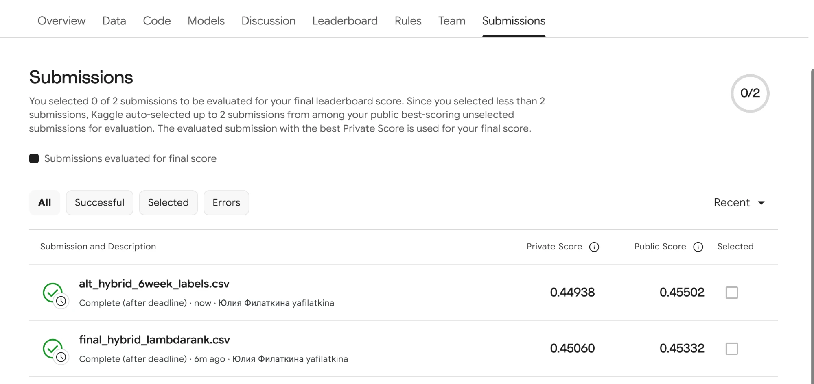

Abstract—We predict, for 1,260 sweet.tv users, the five TV programmes they will watch most often in weeks 31–42, from a view log (weeks 11–30) that carries no programme ids and must be joined to a broadcast schedule in which only ~11% of rows are labelled. We join views to airings by channel and interval overlap, reproduce the organisers' published target rule on a temporal hold-out, implement content-based filtering, association rules, implicit ALS and personalized PageRank, and combine them with a popularity baseline through candidate generation and LightGBM LambdaRank re-ranking that also sees what will air in each user's habitual channel and hour slots. On the hold-out (weeks 25–30) the hybrid reaches MAP@5 = 0.3288 against 0.2162 for popularity and 0.3142 for the best single method (PPR); on Kaggle (12 test weeks) it scores private MAP@5 = 0.45060. Most of the signal is the user's own repeated viewing; the hybrid's extra gain over PPR is small but statistically clear.
Index Terms—implicit feedback, association rules, matrix factorization, personalized PageRank, learning to rank.
Problem. The competition supplies a view log (user_id, vsetv_id, start_time, stop_time, duraton), three schedule files and a template with five programme ids per test user; the metric is MAP@5. A view records only which channel was on, so user–programme interactions must first be built by a join, and every model must extrapolate 12 weeks forward.
Motivation. On linear TV a programme is watchable only when it airs, on a channel the user tends to switch to. The competition's Data page states how the answer was built: per user and airing, screen time = watched time / airing duration; airings with screen time ≥ 0.8 are counted per programme; the 5 most frequent programmes form the answer [7]. Frequently aired programmes that the user habitually finishes therefore dominate the target.
Example. Test user 8377619604347126107 → final output {{EX_ROW0}}.
Contributions. (1) A join, target reconstruction and validation protocol, with every course method evaluated individually against a popularity baseline on one hold-out; (2) a schedule-aware re-ranking hybrid that is the best method in every activity tercile, checked for leakage, determinism and label-shuffle collapse.
Implicit ALS with confidence weights follows Hu et al. [1]; association rules (support, confidence, lift) follow Agrawal et al. [2]; content-based profiles from item attributes follow Pazzani and Billsus [3]; personalized PageRank as a random walk with restart to a preference vector follows Haveliwala [4] and, for item graphs at scale, Pixie [5]; the re-ranker is LightGBM [6] with its LambdaRank objective.
Alternatives considered. User-/item-based kNN CF (lecture 3): subsumed by the co-view graph that PPR walks on. Two-tower retrieval (lecture 5): there are no user side features and only 4,895 users, so ALS already covers the latent-factor family. Hand-tuned weighted score/rank fusion: its weights would have to be tuned on the hold-out; the re-ranker learns them on earlier folds instead.
A view is matched to every airing on the same channel (vsetv_id = channel_id) whose interval [start_time, start_time+duration) overlaps the view interval; fragments of the same user–airing are summed and capped at the airing length, giving screen time = watched seconds / airing duration — the organisers' own normalisation [7]. Shifts of −3…+3 h between log and schedule were tested; 0 h maximised the share of views starting within 2 min of an airing start, so no shift is applied. 92.8% of views (300k sample) overlap some airing. Unlabelled airings (tv_show_id = 0) are dropped as items, as the organisers instruct [7]; they hold 43.6% of overlapped seconds. Labelled overlaps give 3,014,129 user–airing pairs.
Two thresholds, two roles. (i) Target: an airing counts if screen time ≥ 0.8, and the answer is a user's 5 programmes with most such airings (ties: more watched seconds, then smaller id — the organisers' tie rule is not published). (ii) History interactions fed to the methods: overlap ≥ min(300 s, 50% of the airing), weighted by screen time. The looser history cut keeps evidence from partially watched long airings: airings are long (median 5,700 s) while overlaps are short (median 712 s), and a 0.8 cut would discard most of the history. Weighting by screen time (rather than hours) was chosen on val (Table II).
analysis/als_grid.txt).Python 3.12.13; pandas 3.1.0, NumPy 2.5.4, SciPy 1.18.1, scikit-learn 1.9.1 (TF-IDF), implicit 0.7.3 (ALS), LightGBM 4.7.0 (500 trees, lr 0.03, 31 leaves, ≥ 300 rows/leaf, 0.8 row/column sampling, truncation 20). Seeds: 42 (ALS), 42–46 (LightGBM bag), 0 (bootstrap). Apple M2, 8 GB, macOS 26.6.2. Runtime: join 21.5 s; single methods 0.2–4.4 s each on val; full final script (eleven folds, all methods, 15 LambdaRank fits, both submission files) 841–1,231 s, peak RAM 7.4 GB. Two runs produced byte-identical submissions (md5 703fa412…, the file scored on Kaggle).
Key design decisions. (i) The target-week schedule is used only for "which programme airs on which channel at which time" (§5 of the task); target-week views are never read (the log ends in week 30). (ii) Re-ranker labels come from earlier folds; val is used only for selection. (iii) The label is the frequency the official answer is ranked by, not a binary hit.
| Method (val: wk 11–24 → 25–30) | MAP@5 | light | medium | heavy | seen |
|---|
Comparison vs baseline. Popularity scores 0.2162; the user's own repeated viewing is far stronger (history 0.3106, PPR 0.3142), while AR (0.2005), CBF (0.1914) and ALS (0.1695) fall below the baseline. The hybrid adds +0.1127 over popularity (paired bootstrap over users, 1,000 resamples: 95% CI [+0.1023, +0.1233]) and +0.0147 over PPR (CI [+0.0098, +0.0194]) and is the best method in all three terciles.
| Choice (MAP@5; val = wk 25–30, fit = wk 19–24 trained on one earlier fold) | val | fit |
|---|
analysis/select_final.txt).Late submissions under Kaggle account yafilatkina (Юлия Филаткина). Following the instructor's rule, the reported result is the best private score: final_hybrid_lambdarank.csv — private MAP@5 = 0.45060 (public 0.45332). The alternative re-ranker trained on 6-week labels (alt_hybrid_6week_labels.csv, also in the repository) scored private 0.44938 / public 0.45502; the 0.001–0.002 gaps are within split noise. The 12-week-label model had been designated the main file before either score was seen. Both exceed the best private score of the original leaderboard (0.42912).

analysis/check_truth_bruteforce.txt).analysis/audit.txt).8377619604347126107, hits at ranks 1–4, |truth| = 5 → (1+1+1+1)/5 = 0.8 = apk().Two users were chosen deterministically on the val fold: a heavy viewer (95th percentile of history hours) and a light viewer (10th percentile), both with a non-empty val target, so each method's Top-5 can be compared with their actual official top-5 for weeks 25–30. Bold = in that top-5; "new" = not watched in history.
Familiar vs new. Almost every list is familiar: 95.7% of the hybrid's val slots were already watched by the user, and only 22 of its 2,370 hits were programmes new to the user (analysis/segments.txt). CBF proposes the most new programmes (35% of slots) and converts 9 of them into hits; its unfamiliar picks for the heavy viewer (Санджей и Крейг, Бешеные кролики) were misses. On this data a "discovery" is mostly a miss, and the log cannot tell whether an unwatched programme would have been enjoyed.
How the methods differ. Association rules capture co-viewing within a user-week, but Σconfidence favours consequents with the most support, so AR collapses to 27 distinct ids in val (14 in test), almost all news, and gives both example users nearly the popularity list. ALS smooths across users: for the light viewer it inserts a cartoon the user never watched (Губка Боб) because the latent factor places it near news viewers; latent factors miss the individual repetition that defines this target. CBF helps where co-view signal is thin but taste is coherent — for the heavy viewer it stays in the kids' cartoon cluster (AP 0.52). PPR restarts on the user's own history, so its lists are habitual programmes re-weighted by graph neighbours (99% seen); it equals history for the heavy viewer (0.71). Popularity already does well for mainstream news viewers but cannot see that the heavy viewer mostly finishes cartoons (0.20).
Why the hybrid. It is best on val overall (0.3288) and in every tercile (light 0.2092 vs 0.1997 PPR and 0.1436 popularity). Its top features by gain are PPR rank (0.527) and PPR score (0.205), followed by schedule context (slot_nair 0.048, chan_nair rank 0.029): it trusts the personalised graph score and adjusts it by how often a programme will air in the user's slots. For the heavy viewer it ranks the three cartoons the user finishes most above the news (AP 0.80). Cost is modest — 14–21 min end-to-end on a laptop (eleven folds, fifteen LambdaRank fits), each single model < 5 s — so daily retraining is feasible. For the user the lists are dependable but conservative: 97.0% of test slots were already watched, 53% are news and 22% kids' programmes.
Failure case and limitations. The light viewer shows the failure mode: hybrid AP 0.20 vs 0.33 for popularity. The hybrid ranks the user's most-watched programme by hours (Сегодня) first, but it is not in the user's ≥ 80% top-5; ТСН and Викна-Новости are found only at ranks 2 and 4, and a cartoon the user never watched (Свинка Пеппа) fills rank 5. More generally: only 10.8% of schedule rows carry an id, so 43.6% of viewing time is invisible to every method; the organisers' tie rule is unknown; validation covers 6 weeks while the test target counts 12; absence from the log does not prove a user never saw a programme elsewhere. No online experiment was run and no business impact is claimed.
Failure case (wrong target). Our first protocol scored a programme as relevant if it was watched ≥ min(300 s, 50%) at least once in the target window; under it every method looked strong (popularity 0.6544, hybrid 0.7410), far above the best original leaderboard score (0.42912). Root cause: the official answer is the 5 programmes with most airings watched to ≥ 80% [7] — a much stricter, frequency-ranked target. Fix + verification: we re-implemented that rule (checked against a brute-force recomputation), switched the method weights to screen time and the re-ranker label to the ≥ 0.8 frequency; popularity fell to 0.2162 and the hybrid to 0.3249 (0.3288 after the second selection round), much closer to the original leaderboard's range (its 6-week val target is noisier than the 12-week test target).
Other defects found and fixed. (1) pandas 3 parses these timestamps as datetime64[us], so astype('int64') // 10**9 gave units of 1,000 s; the schedule looked self-overlapping (mean gap −2,226 s) and only 48.4% of views matched. Casting to datetime64[s] gave a median gap of 0 s and 92.8% matched views. (2) Methods with fewer than five positive scores were padded with the lowest programme ids instead of the popularity fallback (238 users for AR). (3) Schedule features were window totals, i.e. twice as large in the 12-week test as in the 6-week folds the re-ranker was trained on; they are now per-week rates.
What worked. (i) Screen-time weights instead of hours (history 0.2235 → 0.3106); (ii) schedule-driven candidates, which raised candidate recall of val truth from 0.768 to 0.833 (session log; final value in analysis/select_labels.txt); (iii) training on the frequency label; (iv) five sliding training folds, a more regularised ranker (31 leaves, ≥ 300 rows per leaf) and a 5-seed bag (0.3249 → 0.3288; both hold-outs improved, Table II).
What surprised / did not work. (i) ALS gets worse with more factors (0.1695 at 8, 0.0939 at 64) and is weakest for heavy viewers; (ii) association rules collapse to 27 distinct ids, mostly news; (iii) the many schedule features add only +0.0147 over PPR: about a third of truth items are programmes the user never watched in history, and only 22 such hits reach the hybrid's Top-5; (iv) neither personal (channel, hour) habit features per programme, the rank_xendcg objective, nor rank-averaging with pointwise LightGBM models helped on both hold-outs; (v) training on labels whose window matches the evaluation window helped only marginally (val 0.3285 vs 0.3282 with 3-week labels) — we still trained the final test model on 12-week labels, and the alternative 6-week-label model scored 0.0012 lower on Kaggle private.
Next improvement. Model new-season and new-series premieres explicitly (a programme id absent from the history schedule that starts in the user's habitual slot), the main source of the remaining misses.
AI tool: Claude Code (CLI) with Claude Opus 5.5 (claude-opus-5-5), one session; the unmodified session export is submitted alongside this PDF. How AI was used: code generation (join, methods, hybrid, audit scripts), debugging (timestamp unit, tie handling, per-week normalisation), finding the official target rule on the competition's Data page via the Kaggle API, reference lookup (Crossref check of every DOI), drafting this report from the saved outputs in analysis/. Selection used val only, but many variants were compared on it (weights, ALS factors, labels), so the val numbers are slightly optimistic. Two test files were submitted (12-week vs 6-week labels); the reported one is the best private score, as the instructor required. Kaggle submissions were uploaded by me through the website.
[TO FILL BY STUDENT — What I personally verified: describe in your own words the checks you did yourself, e.g. recomputing one AP@5 by hand from analysis/examples.txt, opening the submission CSV, checking the Kaggle score on the screenshot, opening each reference link.]
[TO FILL BY STUDENT — What I trusted without verification: e.g. library internals of implicit/LightGBM, PPR hyperparameters (not tuned).]
[1] Y. Hu, Y. Koren, and C. Volinsky, "Collaborative filtering for implicit feedback datasets," in Proc. 8th IEEE Int. Conf. Data Mining (ICDM), 2008, pp. 263–272. [Online]. Available: https://doi.org/10.1109/ICDM.2008.22. [Accessed: 2026-10-24].
[2] R. Agrawal, T. Imieliński, and A. Swami, "Mining association rules between sets of items in large databases," in Proc. ACM SIGMOD Int. Conf. Management of Data, 1993, pp. 207–216. [Online]. Available: https://doi.org/10.1145/170035.170072. [Accessed: 2026-10-24].
[3] M. J. Pazzani and D. Billsus, "Content-based recommendation systems," in The Adaptive Web, LNCS vol. 4321, Springer, 2007, pp. 325–341. [Online]. Available: https://doi.org/10.1007/978-3-540-72079-9_10. [Accessed: 2026-10-24].
[4] T. H. Haveliwala, "Topic-sensitive PageRank," in Proc. 11th Int. Conf. World Wide Web (WWW), 2002, pp. 517–526. [Online]. Available: https://doi.org/10.1145/511446.511513. [Accessed: 2026-10-24].
[5] C. Eksombatchai et al., "Pixie: A system for recommending 3+ billion items to 200+ million users in real-time," in Proc. World Wide Web Conf. (WWW), 2018, pp. 1775–1784. [Online]. Available: https://doi.org/10.1145/3178876.3186183. [Accessed: 2026-10-24].
[6] G. Ke et al., "LightGBM: A highly efficient gradient boosting decision tree," in Advances in Neural Information Processing Systems, vol. 30, 2017. [Online]. Available: https://papers.nips.cc/paper/2017/hash/6449f44a102fde848669bdd9eb6b76fa-Abstract.html. [Accessed: 2026-10-24].
[7] sweet.tv — TV program recommender, Kaggle community competition, "Data" and "Evaluation" pages. [Online]. Available: https://www.kaggle.com/competitions/sweettv-tv-program-recommender/data. [Accessed: 2026-10-24].